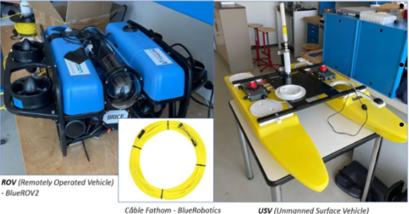
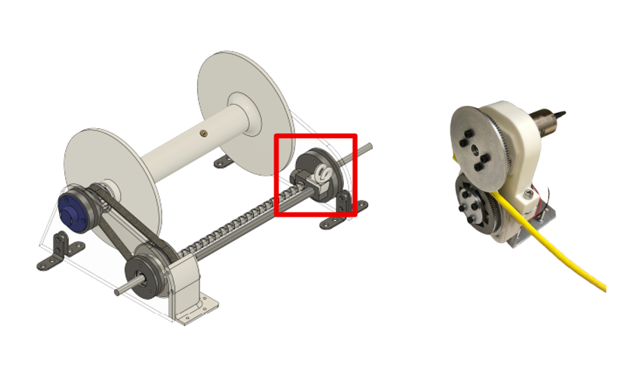
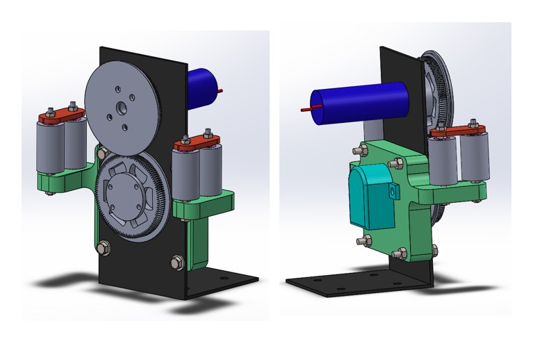
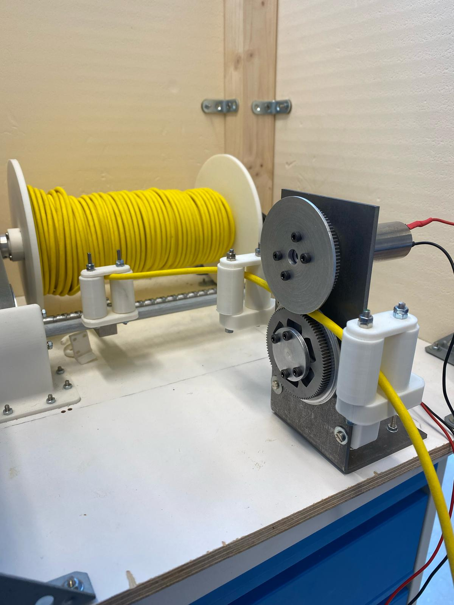

Cooperative USV/ROV Cable Winding System
Project Overview
This project was part of a final group year project during my first year at Seatech, focused on developing a cooperative system between an Unmanned Surface Vehicle (USV) and a Remotely Operated Vehicle (ROV) connected by a communication cable. The objective was to increase the ROV’s operational range for tasks such as underwater mapping, inspection, and data collection by pairing it with a USV. While my two team members handled other subsystems of the USV, my primary responsibility was improving the cable winding system.
Diagnosis and Repair
- Establishing Specifications: We first defined a comprehensive set of technical specifications to guide the repair and redesign process for both USV and ROV components.
- Component Replacement: After diagnosing the system, we identified that one of the two Base Electronic Speed Controllers (ESC) was faulty. We proceeded to replace it with a new, compatible component. This involved uninstalling the old module, verifying electrical connections, and securely installing the new ESC.

Optimization of the Cable Winding System
Initial System Assessment:
The original cable winding system suffered from poor cable guidance and ineffective tension control. The tension mechanism used 3D-printed parts to mount bearings, which led to excessive friction and misalignment. Additionally, testing conditions caused motor overheating and structural deformation, further impacting system precision and reliability.
Tension Module Redesign:
- I designed a machined metal support for the bearings, significantly improving rigidity and axial alignment.
- To hold the encoder and internal bearings securely, I developed a 3D-printed support structure that contributed to overall system stability.
Cable Guidance Enhancement:
- Initial tests with U-shaped pulleys revealed issues with maintaining cable position, particularly during vertical movements.
- As an alternative, I created a new system using two parallel rollers for smoother rotation and improved cable control. A protective cap was added to prevent accidental cable dislodgment during operation.
Results and Conclusions
The final design of the tension module incorporated all improvements from iterative design processes. It featured 11 3D-printed parts, including rollers, safety caps, an encoder support, and a roller chassis for the winding module. A machined metal piece ensured rigid and perfectly aligned bearing support, facilitating smooth and reliable transmission. The system is modular, compact, and designed for future integration of position sensors and dynamic control.
  ← Back to Projects